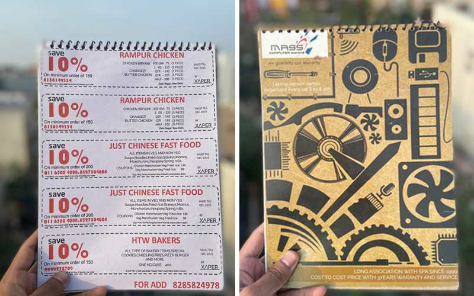
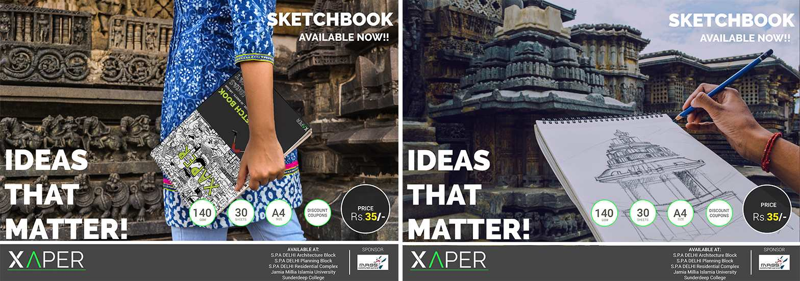

During college, with two other classmates, I worked on setting up a small company that sold a ffordable sketchbooks(offline) subsidised by advertisements from partnered local restaurants and businesses.
Being in an architecture college, sketchbooks were something that could be found in every students backpack and being used throughout the academic year. These sketchbooks varied in size from A5, A4, and A3. Although they were on always on demand, the price of the sketchbooks were not cheap and usually monopolized by big companies
We wanted to make cheaper sketchbooks for everyone to use and sell them less than all other sketchbook brands. The price of these sketchbooks were subsidised by the advertisements from local(wellknow) food joints, bakeries and computer shops that students from our college often visit order.(This was pre-online delivery)

Few of our products
We started off by manufacturing the entire sketchbooks range from scratch. Our college(in delhi) being close to the stationey manufactiuring market(Old city), we used to spend our long breaks between classes traveling to 'Paharganj' and enquiring/sourcing material, people who manufacture them.

Pocket friendly product
For most of the initial months, All our saturdays and holidays were spent in the gullies of Nai sarak, sourcing paper, cutting them, printing covers, transporting and assembling them. Looking back, It was not very smart work
Advertisements and coupons in the sketchbook
By doing most of the work ourself, we could reduce the manufacturing price of each sketchbook considerably. We sold the sketchbooks at a very competitive price without generating much profits
Snapshots we took at Hampi & Belur
We sucessfully sold 4000+ copies of sketchbooks of various sizes before the academic year ended. We also tried selling our products outside across stationery shops in Jamia Univ, Indraprastha(I.T.O) and others.
The local restaurants and bakery stores never gave us our comisssion, although we provided them with a lot of sales through our products :(
We learned a lot of new things starting up something. We never considered sales as something important and thought by pricing lower, we would sell could sell products like hot cakes. It didnt'. We had to stockpile a lot of sketchbooks for the enitre semester. Small margins multiplied over the quantity of products will yield big differences. Retail is very big ecosystem in itself, housing many small players before the products gets delivered to the end user